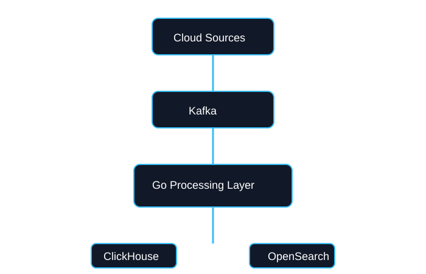

Featured Projects
Architecture and engineering case studies
01
Security Telemetry Platform
Cloud-native observability platform processing logs, metrics, traces, and security events.

02
AI Security Investigation Assistant
AI-powered workflow that summarizes alerts, correlates security signals, and helps analysts investigate incidents.

03
Multi-Tenant Security SaaS Platform
Enterprise security platform supporting authentication, authorization, audit logging, and tenant isolation.
Users
↓
API Gateway
↓
Authorization Engine
↓
Microservices
↓
Database